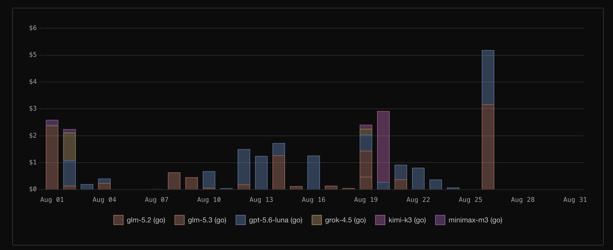

My first LLM subscription was OpenCode Go, and it was nice having access to it. The main reason I chose it was simple: it was one of the cheapest options I could get at the time.

OpenCode Go started at $5 for the first month and $10/month after. It also came with usage limits equivalent to around $60 of model usage: $12 per 5 hours, $30 per week, and $60 per month. The actual amount of usage you get depends on the model you use.
I mainly used models such as GLM-5.3, Kimi K3 and GPT-5.6 Luna. GPT-5.6 Luna became the model I used most because it was relatively cheap and capable enough for my use cases. I used it for quite a bit of time, and for the simple projects I was working on, it was more than enough.
However, some of the more expensive models consumed my usage much faster. I subscribed on July 31, and my monthly limit was exhausted on August 26, just a few days before the end of the month. Despite that, I still think OpenCode Go was fairly well-priced and worth it for what I was doing.
Before Paying for an LLM
Before subscribing, I spent quite a lot of time experimenting with free models and coding agents.
I used OpenCode with free models such as Big Pickle and other models that were available at the time. OpenCode currently offers several free models on a limited basis, although the available models can change.
I also used other coding agents and coding assistants, including GitHub Copilot inside Visual Studio Code. I experimented with Google's free Gemini models for coding simple tasks, and I was able to build things like small games and simple web applications with them.
These experiences showed me that you don't necessarily need an expensive model to start building things. Free models are already capable of handling many simple and even moderately complex tasks.
I also installed the Pi coding agent, which I found interesting because it is a minimal and customizable coding agent. I customized it quite a lot and experimented with different extensions and skills from other developers and content creators. Since it is open source, there is also a lot of room to experiment with how the agent works and how you want to build your own setup.
What I Learned
The biggest lesson for me is that you should maximize the free options before paying for expensive models.
Experiment with free models. Build something. Break things. Try different coding agents. Learn how they use tools, how they manage context, and what happens behind the scenes.
You can learn a surprising amount without spending anything.
There are many options available now, including OpenCode, Gemini, GitHub Copilot, and various other coding agents. Instead of immediately subscribing to the most expensive model, I think it is better to understand what you actually need first.
If your projects are relatively simple, a free or inexpensive model may already be enough. You can then move to more expensive models when you actually have a project that requires their additional capabilities.
What's Next?
Right now, I'm still deciding whether I would spend the money on a ChatGPT Pro subscription. I could already access some capable models through other tools, but I would like to experiment with GPT-5.6 and Codex more extensively.
My goal is not simply to subscribe to the most expensive model available. I want to first build my own workflows, experiment with different agents, and understand how to get the most out of the tools I already have.
Then, when I eventually work on projects that genuinely require more capable and expensive models, I'll have a better understanding of when they are actually worth paying for.
Final Thoughts
Overall, my first LLM subscription was a good experience. More importantly, experimenting with free models before subscribing helped me understand what I actually needed.
My advice is simple: don't rush into expensive subscriptions. Try the free options first, build things with them, and learn how these tools work. You might find that you can accomplish much more than you initially expected without spending anything.
If you want to try OpenCode Go, you can also use my referral link below to get the available referral credit. If you decide to subscribe, using my link is a small way you can support me.
That's it for now. Thank you for reading, and I appreciate you following along on this journey through this rapidly evolving technology.